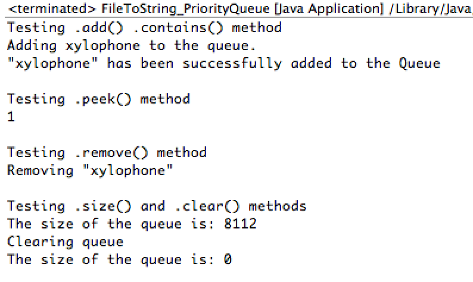

Week 9 Ex. 3: Demo the PriorityQueue methods: add, clear, contains, peak, remove, size using our data set.
Output:

Source Code:
package CSIS2420unit2;
// Write a file to a string
// Usage: java fileToString filename
import java.io.IOException;
import java.util.*;
public class FileToString_PriorityQueue {
public static void main(String[] args) throws IOException {
String [] wordArray= utilities.fileToStringArray("awmt.txt");
List wordList = Arrays.asList(wordArray);
Queue queue = new PriorityQueue(wordList);
System.out.println("Testing .add() .contains() method");
System.out.println("Adding xylophone to the queue.");
queue.add("xylophone");
if(queue.contains("xylophone")){
System.out.println("\"xylophone\" has been successfully added to the Queue");
}
System.out.println("\nTesting .peek() method");
System.out.println(queue.peek());
System.out.println("\nTesting .remove() method");
System.out.println("Removing \"xylophone\"");
queue.remove("xylophone");
if(queue.contains("xylophone")){
System.out.println("\"xylophone\" has been successfully added to the Queue");
}
System.out.println("\nTesting .size() and .clear() methods");
System.out.println("The size of the queue is: "+queue.size());
System.out.println("Clearing queue");
queue.clear();
System.out.println("The size of the queue is: "+queue.size());
}
}